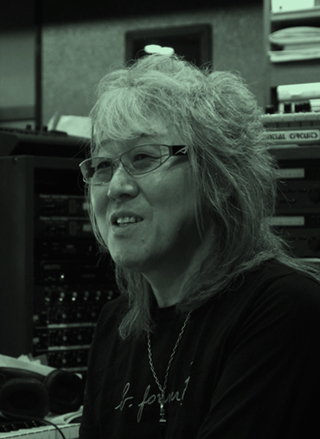
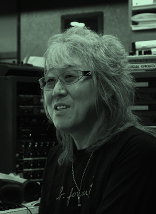
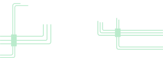
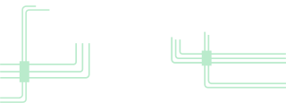

Ghost in the Shell
Mamoru Oshii, réalisateur de Ghost in the Shell
Synopsis
En 2029, le monde, ainsi que l’âme humaine, sont contrôlés par Internet. Motoko Kusagani, une cyberpolicière, et Batou, deux cyborgs appartenant à la section 9, anti-terroriste, doivent mettre la main sur un hacker mystérieux en contact avec un diplomate corrompu. Celui-ci est suspecté d’être à la tête d’un très lucratif trafic d’armes. La section 6, s’intéresse également au programmateur informatique dans le cadre du mystérieux projet 2501 et met des bâtons dans les roues du duo.
Making Of A Cyborg
Making Of A Cyborg est la musique d’introduction crée par Kenji Kawai pour le film Ghost in the Shell. La musique est calme mais elle est accompagnée d’un chant de chorale assez aiguë qui donne de la vie à cette musique doté de basses très profondes.
 *futur-balise-audio

*futur-balise-audio
